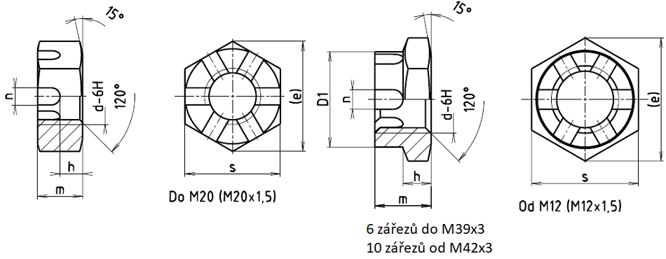

Příklad označení nízké korunové matice s metrickým závitem M10:
KORUNOVÁ MATICE ČSN 02 1412.21–M10
Příklad označení nízké korunové matice s metrickým závitem M10 s válcovou korunou (v rozsahu od M12 do M20):
KORUNOVÁ MATICE B ČSN 02 1412.21–M10
| Závit d | M4 | M5 | M6 | M8 | M10 | M12 | (M14) | M16 | (M18) | |
|---|---|---|---|---|---|---|---|---|---|---|
| M8×1 | M10×1,25 | M12×1,25 | (M14×1,5) | M16×1,5 | (M18×1,5) | |||||
| s | 7 | 8 | 10 | 13 | 16 | 18 | 21 | 24 | 27 | |
| e | 8,1 | 9,2 | 12 | 15 | 18,5 | 20,8 | 24,2 | 27,7 | 31,2 | |
| D1 | – | – | – | – | – | 17 | 19 | 22 | 25 | |
| n | 1,2 | 1,4 | 2,0 | 2,5 | 2,8 | 3,5 | 3,5 | 4,5 | 4,5 | |
| h | – | – | 3,5 | 4,0 | 5 | 6 | 7 | 7 | 8 | |
| m | – | – | 6 | 7 | 8 | 10 | 11 | 12 | 13 | |
| Závlačka D×l ČSN 02 1781 |
D | 1,0 | 1,2 | 1,6 | 2,0 | 2,5 | 3,2 | 3,2 | 4 | 4 |
| l | 10 | 12 | 14 | 18 | 22 | 25 | 28 | 32 | 36 | |
| Hmotnost [g] | – | – | 2,5 | 5 | 8,5 | 13 | 19 | 25 | 35 | |
| Závit d | M20 | (M22) | M24 | (M27) | M30 | (M33×2) | M36×3 | |
|---|---|---|---|---|---|---|---|---|
| M20×1 | (M22×1,5) | M24×2 | (M27×2) | M30×2 | ||||
| s | 30 | 34 | 36 | 41 | 46 | 50 | 55 | |
| e | 34,6 | 39,2 | 41,6 | 47,3 | 53,1 | 57,7 | 63,5 | |
| D1 | 28 | 30 | 34 | 38 | 42 | 46 | 50 | |
| n | 4,5 | 5,5 | 5,5 | 5,5 | 7 | 7 | 7 | |
| h | 8 | 9 | 9 | 11 | 11 | 13 | 13 | |
| m | 13 | 15 | 15 | 17 | 18 | 20 | 20 | |
| Závlačka D×l ČSN 02 1781 |
D | 4 | 5 | 5 | 5 | 6,3 | 6,3 | 6,3 |
| l | 40 | 40 | 45 | 50 | 56 | 63 | 63 | |
| Hmotnost [g] | 44 | 64 | 70 | 105 | 133 | 173 | 215 | |